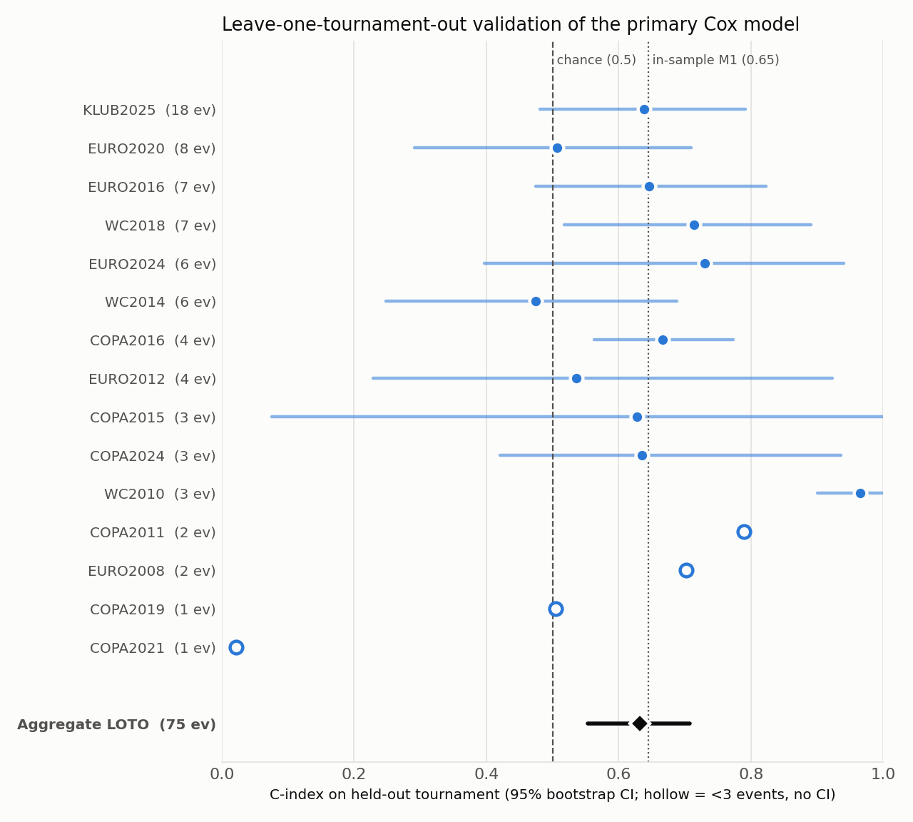

A well-validated weak signal · Survival analysis on open data
Can information that is public before a tournament (workload, injury
history, age, position, market value) tell us which players are more
likely to suffer a severe overuse injury around it? Short answer:
injury history predicts a little, and minutes played predict nothing.
Why
Summer tournaments come straight after a full club season, and
“too many minutes” is the usual explanation when players
break down. I wanted to see whether that holds up in open data, and to
be clear about what open data can and cannot say about injury risk.
Data
Squads and club minutes: 15 tournaments from 2008
to 2025 (three World Cups, five Euros, six Copas América and
the 2025 Club World Cup), 7,499 player-tournament entries. Sources:
transfermarkt-datasets (CC0), the Fjelstul World Cup database
(CC BY-SA 4.0) and Wikipedia squad lists.
Injuries: 31,528 records for 3,195 players,
collected from public Transfermarkt pages. These have no open
licence, so only aggregate results are shown here.
Outcome: the first severe overuse injury (29+ days
out) between 30 days before kick-off and 14 days after the final.
Of 427 injuries in those windows, 237 were overuse, 66 contact and
124 ambiguous; the ambiguous ones were excluded.
Method
A Cox proportional-hazards model (lifelines, ridge penalty 0.05), with
one row per player per tournament and time counted from the start of
the window. The primary model uses 14 covariates: age, market value,
top-five league, club minutes in the previous 12 months, six
injury-history features, days since the last injury, and position. It
is fitted on 5,234 player-tournaments with 75 events.
I fixed this as the primary model and treat the other variants (by
position, archetype and workload dimension) as exploratory. Then I
validated it by leaving one tournament out: fit on 14
tournaments, score the 15th, repeat, and report the C-index with
bootstrap confidence intervals.
Results
Covariate (primary model)
Hazard ratio (95% CI)
p
Recurrent injuries to the same body part
1.17 (0.98–1.39)
0.08
Prior severe injuries, 24 months
1.10 (0.97–1.25)
0.13
Club minutes, 12 months (per 1,000)
1.00 (0.93–1.08)
0.96
Goalkeeper vs defender
0.85 (0.60–1.20)
0.35
Validated C-index: 0.63 (95% CI 0.55–0.71),
against 0.66 in-sample on the same player pairs. Some optimism, as
expected, and the lower bound stays just above chance (0.5).
The model as a whole is not significant (likelihood-ratio test
p ≈ 0.46), and results swing widely between tournaments
because most have only a handful of events.

C-index on each held-out tournament (KLUB2025 is the
2025 Club World Cup). Hollow points have fewer than three events and
no interval.
What I learned
History predicts a little; workload predicts nothing.
Recurrence is the strongest signal, but it doesn't reach p < 0.05.
Club minutes sit at a hazard ratio of exactly 1.00 with a tight
interval. That could mean workload doesn't matter, or that public
data measures it badly.
The goalkeeper “effect” was confounding.
Without injury history, goalkeepers looked protected (HR 0.57,
p = 0.08). With it, the effect shrinks to 0.85 (p = 0.35).
Validate before you interpret. A C-index of 0.65
sounds respectable. Out of sample it is 0.63 and the overall test is
null, so the honest headline is a weak signal and a clear negative
result for workload, not a risk tool.
Limitations
75 events for 14 covariates (about 5 per variable, below the usual
10), and no correction for the many model variants explored.
124 ambiguous injuries were excluded; classifying them by hand
could change the result.
18 of the 75 events come from the 2025 Club World Cup.
No real exposure measure: tournament minutes are missing for most
editions and club minutes are zero for 48% of players.
Transfermarkt records severe, high-profile injuries and star
players better than minor injuries and squad players.